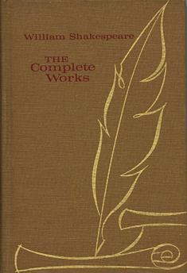
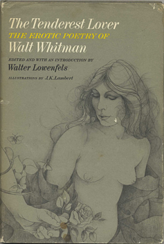
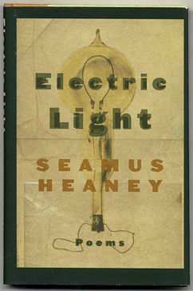

A Brief History Of Poetry
Unlike other literary forms that we can date to precise texts and time periods, it’s a challenge to pinpoint the earliest work of poetry. In one form or another, poetry has been around for thousands of years. However, we might think of the epic poem as the first instance of poetry, appearing as early as the 20th century B.C. Jumping hundreds of years ahead, we might turn, then, to the sonnet form and its early appearance in the 13th century. Before moving into more modern poetic forms, it’s important to consider Restoration poetry of the 17th century and the satirical verses of John Dryden and Alexander Pope.
When most of us think about poetry’s beginnings, we’re drawn to the work of notable Romantic poets or to the American fireside poets who responded to the work of those British writers, reusing old forms and creating new ones. Yet by the 20th and 21st centuries, Modernism and the waves of change brought about by world war also influenced poetry, resulting in works by poets with distinct voices who came to enjoy global circulation.

The Epic of Gilgamesh
Where Does Poetry Begin? Discovering the Epic Poem
Who wrote the first work of poetry, and is it something that a collector can seek out in an antiquarian bookstore? The Epic of Gilgamesh often is cited as one of the earliest works of epic poetry, dating back to the 18th century B.C. Consisting of Sumerian poems, it’s a text that was discovered through many different Babylonian tablet versions during archaeological excavations. Other examples of early epic poems might include the Mahabarata and the Ramayana, the latter of which has become an important narrative in both Hindu and Buddhist mythology throughout regions of Asia.
A list of the most notable works of epic poetry—at least in the Western world—would have to include the Iliad and the Odyssey, both works of Greek mythology that have been attributed to the poet Homer. Written in dactylic hexameter, the Iliad recounts the battle between Achilles, a famed warrior, and King Agamemnon during the Trojan War. A companion of sorts to the Iliad, the Odyssey depicts the long journey of its hero, Odysseus. Although these poetic works initially were composed thousands of years ago, even modest collectors can seek out translations for their libraries. For instance, you might look for T.E. Shaw’s 1951 translation of the Odyssey, published by Oxford University Press.
Onto the Sonnets
Wouldn’t it be a crime to discuss the history of poetry without mentioning the creation of the sonnet form? While many of us simply learned to distinguish between Petrarchan and Shakespearean sonnets in a high school or college English class, it’s important to know that these works are fundamental to the history of verse. Traditionally, sonnets are written in iambic pentameter and the rhyme scheme varies depending upon whether you’re looking at an Italian or an English poem. Petrarca, for whom the Petrarchan sonnet is named, is perhaps one of the most famous early writers of the sonnet. Following his work in the 13th century, other poets created variations of the sonnet, but it became best known as an English poetic form through the work of William Shakespeare in the 16th century. Where did the poetic form lead after the sonnet? Elizabethan poetry of the 1500s soon shifted into Restoration poetry and a marked turn away from the sonnet.

The Complete Works of Shakespeare
Collecting early examples of poetry might seem like a difficult challenge, but it turns out that locating different editions and translations of these works can make for an exciting challenge. In addition, the more we read poetry from the 18th century and earlier, the more likely we are to recognize those forms, themes, and images in modern and contemporary works. Don’t you want to know more about how the epic poetry of Homer ultimately resulted in the new forms created by contemporary writers like T.S. Eliot, Derek Walcott, and Seamus Heaney? Experimentation with the poetic form didn’t begin with 20th-century modernism, but rather in distinct variations on traditional forms that popped up hundreds of years prior.
Restoration Poetry and Satire
Following the reign of Queen Elizabeth I, the English Restoration period (from 1660-1689) saw the rise of literary elites, such as John Dryden. Perhaps one of the best-known names of English literary criticism, translation, drama, and poetry, Dryden made his name as a poet with his satirical mock-heroic, or mock-epic, poems. The most famous of these is a work written while he was Poet laureate, Mac Flecknoe; or, A satyr upon the True-Blew-Protestant Poet, T.S. It’s no secret that Dryden drafted this poem to mock Thomas Shadwell, another of Dryden’s contemporaries. Richard Oden, a Dryden scholar, explained that Dryden wrote the mock-heroic in response to Shadwell’s “offenses against literature.” Another of Dryden’s notable mock-heroics is Absalom and Achitophel, published in 1681 toward the end of Restoration. While Dryden crafted his poetry more than 300 years ago, it’s still possible to get our hands on interesting editions of his works. For instance, you might keep an eye out for 19th-century editions of his work with gilt page edges, such as The Poetical Works of John Dryden. The form of the mock-heroic and the use of poetic form for satire didn’t end with Dryden. Alexander Pope, most famous for his work The Rape of the Lock (1712), carried on Dryden’s tradition of using poetry for comedic ends.

Mac Flecknoe By John Dryden
The Romantics and 19th-Century Poetry
Since we’re keeping this history brief, it’s difficult to provide any kind of full accounting of poetry in the 19th century. However, some important poets to consider include key Romantic poets such as William Blake, Samuel Taylor Coleridge, William Wordsworth, and John Keats. And naturally, if you’re familiar with American poetry in this period, you’ve come across some of the fireside poets like Henry Wadsworth Longfellow, Oliver Wendell Holmes, and William Cullen Bryant. In other circles, Walt Whitman revolutionized the 19th-century American spirit with his Leaves of Grass, while most of Emily Dickinson’s use of language fragments, hyphens, and em-dashes, written in the mid-to-late 1800s, were published only posthumously.

The Tenderest Lover By Walt Whitman
Into the 20th Century
Toward the turn of the 20th century as Whitman continued to revise his 1855 edition of Leaves of Grass, he wrote, “Of Modern Man I Sing,” ushering in a new period—and a variety of forms—for poetry. The newfangled, modernist language of Gertrude Stein gloriously overwhelmed American and expatriate readers who bought Tender Buttons in 1914. Those same readers were to be startled again a short time later by T.S. Eliot’s use of ancient languages and invocation of previous poetical texts in his famous poem, The Waste Land (1927). Yet modernist poetry wasn’t limited to Americans living abroad. The seminal work of Claude McKay, an African American poet born in Jamaica who immigrated to the U.S. in 1912, carried the Caribbean region into his distinctly American poetic voice. Writing of war, racism, and memories of Jamaica, McKay authored notable poems such as “If We Must Die,” “The Lynching,” and “The Tropics in New York.” The 20th century also witnessed a number of poets winning the Nobel Prize, from the United States to India. Rabindranath Tagore, who resisted colonial language intrusion and wrote solely in Bengali, won this esteemed award in 1913, followed by Irish poets like William Butler Yeats in 1923 and Seamus Heaney in 1995. If you’re collecting the work of some of these Nobel Laureates, you might look, for example, for Heaney’s Human Chain (2010), Electric Light (2001), or The Haw Lantern (1987). Other significant poets who won the Nobel Prize include Rudyard Kipling, Wole Soyinka, and Derek Walcott. Walcott’s Tiepolo’s Hand (2000) or The Star-Apple Kingdom (1979) would be interesting additions to any poetry collection. Whether you're interested in first editions of modern and contemporary poetry signed by the authors, or earlier works in interesting new editions and translations, collecting poetry can provide you with many different text forms from various regions across the world. And reading poetry can help to expand your historical and political knowledge, too. Who knows—after reading the poetry of Kipling, Soyinka, and Walcott, you may just find yourself with a newfound appreciation for postcolonial literature and aesthetic forms of resistance.

Electric Light By Seamus Heaney
 William Shakespeare was an English poet, playwright, and actor, widely regarded as the greatest writer in the English language and the world's pre-eminent dramatist. He is often called England's national poet and the "Bard of Avon". His extant works, including some collaborations, consist of about 38 plays, 154 sonnets, two long narrative poems, and a few other verses, of which the authorship of some is uncertain. His plays have been translated into every major living language and are performed more often than those of any other playwright.
William Shakespeare was an English poet, playwright, and actor, widely regarded as the greatest writer in the English language and the world's pre-eminent dramatist. He is often called England's national poet and the "Bard of Avon". His extant works, including some collaborations, consist of about 38 plays, 154 sonnets, two long narrative poems, and a few other verses, of which the authorship of some is uncertain. His plays have been translated into every major living language and are performed more often than those of any other playwright. The Greek poet Homer was born sometime between the 12th and 8th centuries BC, possibly somewhere on the coast of Asia Minor. He is famous for the epic poems The Iliad and The Odyssey, which have had an enormous effect on Western culture, but very little is known about their alleged author.
Homer is a mystery. The Greek epic poet credited with the enduring epic tales of The Iliad and The Odyssey is an enigma insofar as actual facts of his life go. Some scholars believe him to be one man; others think these iconic stories were created by a group. A variation on the group idea stems from the fact that storytelling was an oral tradition and Homer compiled the stories, then recited them to memory.
Homer’s style, whoever he was, falls more in the category of minstrel poet or balladeer, as opposed to a cultivated poet who is the product of a fervent literary moment, such as a Virgil or a Shakespeare. The stories have repetitive elements, almost like a chorus or refrain, which suggests a musical element.
The Greek poet Homer was born sometime between the 12th and 8th centuries BC, possibly somewhere on the coast of Asia Minor. He is famous for the epic poems The Iliad and The Odyssey, which have had an enormous effect on Western culture, but very little is known about their alleged author.
Homer is a mystery. The Greek epic poet credited with the enduring epic tales of The Iliad and The Odyssey is an enigma insofar as actual facts of his life go. Some scholars believe him to be one man; others think these iconic stories were created by a group. A variation on the group idea stems from the fact that storytelling was an oral tradition and Homer compiled the stories, then recited them to memory.
Homer’s style, whoever he was, falls more in the category of minstrel poet or balladeer, as opposed to a cultivated poet who is the product of a fervent literary moment, such as a Virgil or a Shakespeare. The stories have repetitive elements, almost like a chorus or refrain, which suggests a musical element.
 Poet, painter, engraver, and visionary William Blake worked to bring about a change both in the social order and in the minds of men. Though in his lifetime his work was largely neglected or dismissed, he is now considered one of the leading lights of English poetry, and his work has only grown in popularity. In his Life of William Blake (1863) Alexander Gilchrist warned his readers that Blake “neither wrote nor drew for the many, hardly for work’y-day men at all, rather for children and angels; himself ‘a divine child,’ whose playthings were sun, moon, and stars, the heavens and the earth.” Yet Blake himself believed that his writings were of national importance and that they could be understood by a majority of his peers. Far from being an isolated mystic, Blake lived and worked in the teeming metropolis of London at a time of great social and political change that profoundly influenced his writing. In addition to being considered one of the most visionary of English poets and one of the great progenitors of English Romanticism, his visual artwork is highly regarded around the world.
Poet, painter, engraver, and visionary William Blake worked to bring about a change both in the social order and in the minds of men. Though in his lifetime his work was largely neglected or dismissed, he is now considered one of the leading lights of English poetry, and his work has only grown in popularity. In his Life of William Blake (1863) Alexander Gilchrist warned his readers that Blake “neither wrote nor drew for the many, hardly for work’y-day men at all, rather for children and angels; himself ‘a divine child,’ whose playthings were sun, moon, and stars, the heavens and the earth.” Yet Blake himself believed that his writings were of national importance and that they could be understood by a majority of his peers. Far from being an isolated mystic, Blake lived and worked in the teeming metropolis of London at a time of great social and political change that profoundly influenced his writing. In addition to being considered one of the most visionary of English poets and one of the great progenitors of English Romanticism, his visual artwork is highly regarded around the world.  John Keats was born in London on 31 October 1795, the eldest of Thomas and Frances Jennings Keats’s four children. Although he died at the age of twenty-five, Keats had perhaps the most remarkable career of any English poet. He published only fifty-four poems, in three slim volumes and a few magazines. But over his short development he took on the challenges of a wide range of poetic forms from the sonnet, to the Spenserian romance, to the Miltonic epic, defining anew their possibilities with his own distinctive fusion of earnest energy, control of conflicting perspectives and forces, poetic self-consciousness, and, occasionally, dry ironic wit.
Although he is now seen as part of the British Romantic literary tradition, in his own lifetime Keats would not have been associated with other major Romantic poets, and he himself was often uneasy among them
John Keats was born in London on 31 October 1795, the eldest of Thomas and Frances Jennings Keats’s four children. Although he died at the age of twenty-five, Keats had perhaps the most remarkable career of any English poet. He published only fifty-four poems, in three slim volumes and a few magazines. But over his short development he took on the challenges of a wide range of poetic forms from the sonnet, to the Spenserian romance, to the Miltonic epic, defining anew their possibilities with his own distinctive fusion of earnest energy, control of conflicting perspectives and forces, poetic self-consciousness, and, occasionally, dry ironic wit.
Although he is now seen as part of the British Romantic literary tradition, in his own lifetime Keats would not have been associated with other major Romantic poets, and he himself was often uneasy among them